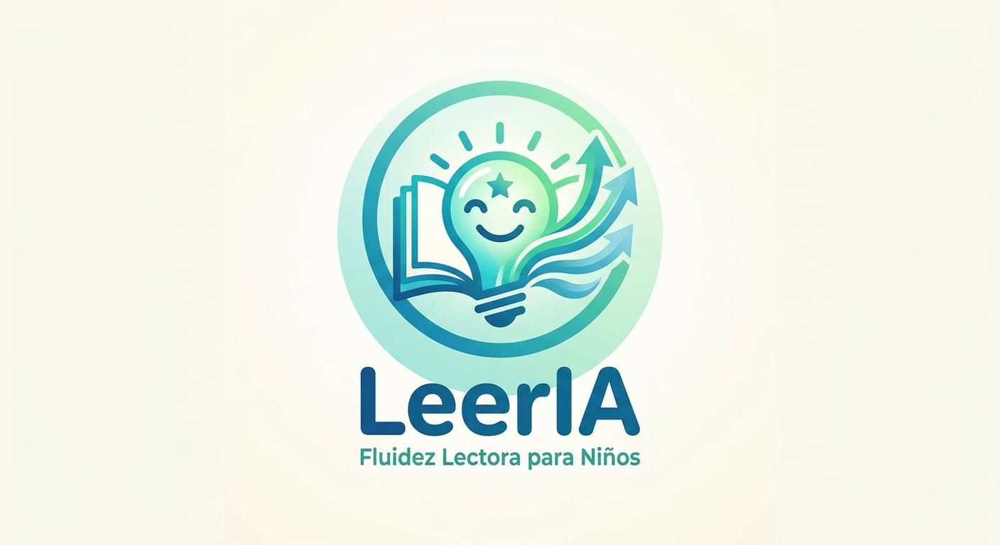

Tecnología
- Node.js
- Express
- EJS
- PostgreSQL
- Supabase Storage
- Vercel
- Node test runner

LeerIAInstituto IES 9-023 · Mendoza
LeerIA graba la lectura en voz alta desde el navegador y ayuda a la docente a medir velocidad, precisión y pausas, sin planillas ni cronómetro.
Equipo: Joel, Jazmín, Cecilia, Fernando, Anabel y Matías.
El problema
En un aula de Mendoza, la docente escucha a cada chico y, al mismo tiempo, anota todo esto. Alumno por alumno.
Cada lectura completa, de cada estudiante del curso.
Palabras omitidas, sustituidas o mal pronunciadas.
Con cronómetro en mano, palabras por minuto.
Si respeta la puntuación, la entonación y el fraseo.
La solución
LeerIA usa la computadora o la tablet del aula. No hace falta instalar nada.
Entra con el código de su clase, toca su nombre y escribe su PIN. Elige el texto asignado y graba su lectura en voz alta.
El sistema alinea lo leído con el texto y propone qué palabras fueron correctas, omitidas o cambiadas. Calcula velocidad y precisión.
Escucha el audio, confirma o corrige la propuesta y publica la devolución. Sigue el progreso del curso y de cada alumno.
La última palabra la tiene la docente. El algoritmo sugiere; no diagnostica ni publica nada por su cuenta.
Probalo
Es el mismo algoritmo de alineación que usa la aplicación (distancia de edición de Levenshtein), en tu navegador. Cambiá lo que leyó el alumno y mirá cómo se actualiza.
correcta sustitución omisión inserción
Esto es una propuesta. En LeerIA la docente escucha el audio y decide si una inserción fue una repetición, una autocorrección o un fragmento, y confirma el tiempo de inicio y fin antes de publicar.
El camino
Simple y funcional: ya medía palabras por minuto, precisión, expresividad y pausas. Su aspecto era muy básico.
Una mejora visual enorme y un salto en la calidad del sistema: base de datos PostgreSQL, audios privados y revisión docente con historial.
La docente crea textos, arma sus clases, imprime tarjetas con PIN y código QR para cada alumno y sigue el progreso de forma clara.
Probarlo con alumnos reales en la escuela, aprender de las docentes y seguir mejorando.
Por dentro
Una aplicación web completa, pensada para la escuela y para cuidar los datos de chicos y chicas.
LeerIA le devuelve tiempo al docente para lo que más importa: acompañar a cada alumno a leer mejor.
Crear algo es solo el comienzo. Lo importante es compartirlo, aprender de los demás y descubrir hasta dónde podemos llegar.
Joel · Jazmín · Cecilia · Fernando · Anabel · Matías
¡Muchas gracias!